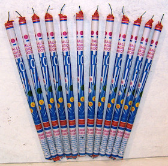

While police in Watertown, Massachusetts closed in on the boat
in which 19-year-old terrorist suspect Dzhokhar
Tsarnaev had concealed himself, FBI investigators in Chicago were snapping
handcuffs on 18-year-old Abdella
Ahmed Tounisi as he attempted to board an airplane bound for Istanbul. He
intended to travel to Syria to fight on behalf an Islamic rebel group that
seeks to overthrow the regime of Bashar al-Assad.

There is reason to believe that the FBI had advance
knowledge of the Boston Marathon bombing plot. On the other hand, we know that Tounisi was
a pure product of the FBI's terrorist factory: He was the latest in a long
procession of socially alienated teenage Muslim males who have been lured into an
FBI-orchestrated plot by the Bureau's roving
troupe of “terrorism
facilitators.”
What makes the terrorism charges against Tounisi more
remarkable is the fact that he is accused of seeking to enlist in the service of
a terrorist group that is presently receiving material aid from Washington.

Tounisi had been targeted by the FBI last fall after a friend named Abdel Daoud was snared in one of the Bureau's prefabricated terror plots.
The indictment
against Daoud claims that he had “attempted, without lawful authority, to use a
weapon of mass destruction” – in this case, a car bomb – in a terrorist attack
against a Chicago-area nightclub. In familiar fashion, the Bureau's
informant/provocateurs sketched out the plot and provided the targeted patsy
with all of the material necessities – including the dummy bomb.
Daoud playedhis scripted role to perfection – that is, he expressed entirely justifiable
outrage over the U.S. Government's relentless campaign to kill Muslims
overseas, while allowing himself to be seduced by agents of that same
malevolent government into committing a proseuctable act.
The affidavit
filed by the FBI claimed that in a conversation with an informant Doud said he wanted
the bombing to “send
the message that the United States should `stop abusing people overseas.'” Like
millions of Americans who see Muslims as an undifferentiated mass of hostility,
Daoud reportedly saw Americans as anti-Muslim automatons, rather than as “regular
people.”

“They're like –
more like robots, even the decent, nice people, most people in this country,”
Daoud reportedly told the FBI provocateur. From Daoud's perspective, this
applied even to those who “hate the president” (who, let it not be forgotten,
is killing Muslim civilians through drone strikes practically every day) and
who opposed “the two wars.” This is because most Americans are still “for the
war on terrorism,” insisted Daoud.
As the FBI carefully reeled in Daoud, it made a play for Tounisi
as well, but he was savvy enough to suspect that the operation was a law
enforcement sting. Rather than using what influence it had to encourage this
wayward young man onto the path of probity, the Bureau redoubled its effort to
entice him into a prosecutable act: It set up a website intended to recruit
fighters for the Syrian rebel group Jabhat al-Nusrah (JAN), which used to be
called al Qaeda in Iraq.
After finding
the website, Tounisi made contact with a purported recruiter for the group, who
was yet another of the FBI’s seemingly inexhaustible supply of terrorism
facilitators. It was the FBI’s asset who made arrangements for Tounisi to
travel to Syria, by way of Turkey, to join the U.S.-supported terrorist group.
The FBI, whose chief occupation since 2002 has been the
manufacture of ersatz terrorism plots, induced Tounisi into an act described
as providing “material aid” to a foreign terrorist group. If he is
convicted, he will be found guilty of carrying out the Obama administration's
official policy without official permission. He is not the only American
presently facing the prospect of imprisonment on this charge. The
administration has filed felony charges against a US Army Veteran from Arizona
named Eric Harroun, who traveled to Syria to join the fight against Assad.
Harroun, who used his Facebook page to describe his role in
the conflict, is charged with using a weapon of mass destruction – namely, a
rocket-propelled grenade launcher – while fighting on behalf of JAN.
JAN is the dominant element of the rebel “coalition” being
supported by the US and NATO in its insurgency against the admittedly loathsome
regime of Bashar al-Assad. JAN has demonstrated its worthiness as a recipient
of taxpayer-extracted material support by carrying out undisguised acts of
terrorism against civilians. Of particular interest in light of the Boston
bombing is the
growing role played by Chechen jihadists in the U.S.-backed JAN. Chechen
Jidhadists were accused of carrying
out the recent abduction of two Syrian Orthodox Bishops earlier this week.

As with Tousnisi, Harroun is accused of giving “material
support” to a foreign terrorist group; as in the case of Daoud, he is charged
with using a “weapon of mass destruction” – a rocket-propelled grenade launcher
– “without legal authority.”
The relevant
section of Title 18 of the US Code specifies that the term
"weapon of mass destruction" applies to the
following "destructive devices": "[A]ny
incendiary, explosive, or poison gas -- bomb, grenade, rocket having a
propellant charge of more than four ounces, missile having an explosive or
incendiary charge of more than one-quarter ounce, mine, or ... any type of weapon (other than a shotgun or a shotgun shell which
the Attorney General finds is generally recognized as particularly suitable for
sporting purposes) by whatever name known which will, or which may be readily
converted to, expel a projectile by the action of an explosive or other
propellant, and which has any barrel with a bore of more than one-half inch in
diameter...."
| NOT a WMD, according to the Regime.... |

John
Mueller, who holds the Woody Hayes Chair on National Security
Studies at Ohio State University, points
out
that under federal statutes dealing with WMDs "not only is a hand grenade
a weapon of mass destruction ... so is a maliciously designed child's rocket
even if it doesn't have a warhead. On the other hand, although a
missile-propelled firecracker would be considered a weapon of mass destruction
if its designers had wanted to think of it as a weapon, it would not be so
considered if it had previously been designed for use as a weapon and then
redesigned for pyrotechnic use or if it was surplus and had been sold, loaned,
or given to you (under certain circumstances) by the Secretary of the
Army."
The WMD designation would likewise apply to "all artillery,
and virtually every muzzle-loading military long arm for that matter,"
continues Schneider.
 |
| ...but Roman Candles can be considered WMDs. |

For the Regime and its acolytes, “terrorism” is committed
when private individuals, singly or in groups, emulate the criminal violence of
the State without receiving official permission. That principle was explained –
with admirable candor – by Bill Clinton during
an interview published in the December 2009 issue of Foreign Policy magazine. Clinton defined terrorism
as "killing and robbery and coercion by people who do not have state authority and go beyond national
borders." (Emphasis added.)
By
reverse-engineering this definition we learn that "killing and robbery and
coercion" carried out with "state authority" isn't
terrorism; it's public policy. We can also infer that the "war on
terror" is not meant to bring an end to such violence, but rather intended
to eliminate challenges to the State’s monopoly on criminal violence.
Accordingly, an act of politically motivated armed violence
carried out by “non-state actors” can be described as an act of WMD-involved
terrorism if it is carried out without what the Regime calls “legal authority.”
On the other hand, exactly the same acts can be consecrated as “official policy”
when they are committed by “non-state actors” who operated on behalf of the
Regime.
Three days before the Boston Marathon Bombing, the foreign
policy establishment celebrated
the opening of the Washington office of the National Council of Resistance in Iran.
This is the political front group for the so-called People’s Mujahadeen (or
MeK), a Washington-backed Islamo-terrorist group that has carried out bombings
and assassinations
in Iran during the past decade. During the 1970s, the group staged several
terrorist attacks that left U.S. citizens wounded or dead. It was part of the
revolutionary coalition that brought Khomeni to power in 1979, but was forced
to flee to Iraq following a purge. During the ten-year Iran-Iraq war, the MeK
carried out attacks against Iran on behalf of Saddam Hussein’s regime.
Created in 1965 as part of a Soviet-sponsored international
terrorist network that waged wars of "national liberation" throughout
the developing world, the MeK was listed as a terrorist organization from 1997
until last September, when it
was removed from the State Department’s terrorism roster following a
high-pressure campaign that included scores of prominent elected officials and
veterans of the National Security “community.”
Several members of Congress, including House Intelligence
Committee Chairman Mike Rogers (R-Michigan), received
significant cash donations from MeK’s supporters as part of the de-listing
campaign. Other paid supporters of the MeK included Newt Gingrich, former
FBI Director Louis Freeh, former Attorney General Michael Mukasey (who
supervised prosecution of federal “material support” cases on much flimsier
evidence), retired General Hugh Shelton, former chairman of the Joint
Chiefs of Staff, and retired General James Jones, former National Security Adviser to Barack Obama.
Every U.S. official who lobbied on behalf of the MeK
committed the federal offense of providing “material support” to a listed
terrorist group. Under the Anwar al-Awlaki precedent, each of them was liable
to summary execution by drone strike. Indeed, under the Abdel al-Awlaki codicil
to that precedent, each of their children was likewise a fair target for a
drone strike because
of what White House mouthpiece Robert Gibbs would describe as the lethal
irresponsibility of their parents.

As with the JAN in Syria, the Iranian MeK is considered a
valuable asset in Washington’s program to foment warfare throughout the Middle
East – by providing luridly unreliable but politically useful “intelligence”
about the Iranian nuclear program, and carrying out assassinations and other
acts of officially sanctioned terrorism within the country. One measure of the
MeK’s value to the Regime is found in the fact that the office for the group’s
political front group is located less than one hundred yards from the White
House.
According
to press accounts, Dzhokar Tsarnaev (communicating through a dense haze of
painkillers and other pharmaceuticals) admitted to planting the Boston Marathon
bombs and told investigators that he and his brother -- like Tounisi, Daoud,
and dozens of other young men their age who had been shepherded into FBI-orchestrated
false flag operations – were aggrieved over the U.S. government’s unremitting
state terrorism against Muslim populations abroad.
The fact that the FBI had previous contact with Tamerlan
Tsarnaev, as well as “multiple” warnings
about his potential involvement in terrorism, would suggest culpable incompetence
on the part of the Bureau – if it weren’t for the fact that the bombing so
perfectly fits the template from which scores of FBI-directed plots have been
struck. This, when coupled with the fact that authorities
were conducting a bombing “drill” on the day of the marathon, suggests that
something other than official incompetence is involved.
If the Boston Marathon bombing plot was a
case of “lone wolf” terrorism rather than an episode of Homeland Security
Theater that went off-script, it would be an anomaly – albeit a fortunate one
for those who presume to rule us, given that they profit from the bloody misfortune
of the population they supposedly protect.
An explanation –
and an appeal
Thanks for not forgetting about Pro
Libertate during my extended but unavoidable absence.
Since April 15 I’ve been
bed-ridden – and usually in the hospital – fighting a severe infection. I’m
nearing the end of a ten-day course of IV antibiotics that requires twice-daily
visits to the hospital that last nearly two hours. Assuming we can beat back
the infection, I’m looking at extended therapy with the local wound center.
As a freelance writer whose income
is dependent entirely on my output, I was barely able to eke out living
expenses for my family of eight. Since I was fired by The New American (without
cause or explanation, I must reiterate) more than six years ago, our family has
been without medical coverage. We’re doing what we can to pay off the expenses
incurred by my wife’s repeated hospitalizations, and will be for the rest of my
life.
I don’t exaggerate in the slightest in saying that my current health crisis has left us entirely destitute – or it would have, were it not for some timely and generous help from friends over on Facebook. We’re still holding onto a sheer cliff wall by our fingernails, and we desperately need whatever help you can provide. If everyone who follows this blog could donate ten dollars, this would see my family through the end of the summer.
I don’t exaggerate in the slightest in saying that my current health crisis has left us entirely destitute – or it would have, were it not for some timely and generous help from friends over on Facebook. We’re still holding onto a sheer cliff wall by our fingernails, and we desperately need whatever help you can provide. If everyone who follows this blog could donate ten dollars, this would see my family through the end of the summer.
In any case, thank you to everyone
who has given so generously to me and my family in the past. Likewise, I
appreciate everyone who has taken the time to read and share what I have
published in this space. I intend to continue publishing my thoughts as long as
there are people interested in reading them. Thanks again, and God bless.
Dum spiro, pugno!